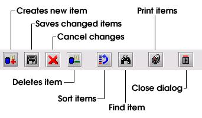
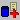
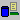

The Data Tool Bar

The
data tool bar is located at the top of every data capturing window.
The following buttons are available:
|  | Creates a new data item and adds it to the list of data items. All the fields on the window where new information should be entered will be cleared. Note that new information is not saved at this point. If the window should be closed at this stage without saving, all information entered since the last point of saving will be lost. |
| Save the information entered. Note that all the information entered will be saved and not only the last item. | |
| Cancel all changes made since the last save. | |
|  | Delete the current item. Note that the deletetion is permanent and there is no way to recover the information. |
|
|
Sort the list of items displayed. |
| Find a particular item in the list. | |
| Print all the items in the list. | |
| Close the window. |